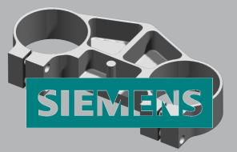

这个功能供您在着色图像的前景中插入 TIFF 图像。
使用 TIFF 图像时可以对源 TIFF 图像指派透明颜色，并控制它的放置。
|
选项 |
描述 |
|---|---|
|
颜色 |
指定前景 TIFF 图像的透明颜色。 |
|
X 位置 |
指定 TIFF 图像放置的 X 坐标。 |
|
Y 位置 |
指定图像放置的 Y 坐标。 |
|
Tiff 图像 |
用于打开 TIFF 图像文件。 |